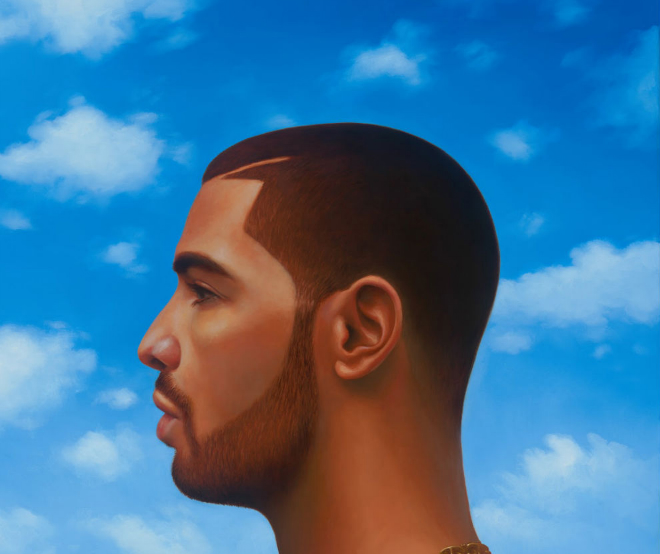

Top 5 albums
I very much love all drake's albums, Picking just five favorites is tough, but I've managed to narrow it down. Check out my top five Drake albums!
5.Views(2016)

Despite receiving mixed reviews from critics, Drake's album "Views," released in 2016, proved to be a commercial juggernaut.
Tracks like "Hotline Bling," "One Dance," and "Controlla" dominated the charts, solidifying Drake's status as a powerhouse
in the music industry. The album's diverse range of sounds, from dancehall-infused beats to introspective ballads, captured
the essence of Drake's multifaceted style and resonated with fans worldwide. The title "Views" pays homage to Drake's hometown
of Toronto, providing listeners with a glimpse into his personal experiences and reflections on fame, relationships, and success.
Personally, "One Dance" holds a special place in my heart as my favorite track from the album. Back in grade 9, my friends and I
used to dance to it a lot sparking moments of pure joy and connection that linger in my memory.
4.Nothing Was The Same(2013)

this album is packed with hits like "Started from the Bottom," "Hold On, We're Going Home," and "Worst Behavior," which are all timeless
classics.Personally, my absolute favorites from the album are "From Time," "Hold On," and "Worst Behavior." Interestingly, "Worst
Behavior" holds a special place in my heart as my brothers and I used to groove to it a lot, creating cherished memories. Another
track that I love is "Pound Cake," as it brings back a flood of nostalgia and memories. "Nothing Was the Same" perfectly captures
Drake's introspective lyricism and emotive delivery, as he navigates themes of success, relationships, and personal growth.The
album's atmospheric beats and melodic hooks create a cohesive sonic landscape, drawing listeners in with each track
3.Scorpion(2018)

Despite some people saying it's a bit long and all over the place, Drake's album "Scorpion," dropped in 2018, was huge in the
music scene. Tracks like "God's Plan," "Nice for What," and "In My Feelings" took over the charts and became instant hits.
This double album showed off Drake's range, with deep, introspective jams mixed in with high-energy bangers. And let's not
forget, Drake got real personal, talking about his love life and dealing with fame. It's just more proof of his storytelling
skills.
2.Take care(2011)

I think Drake's "Take Care" album, released in 2011, hits diferent for me. It blends introspective lyrics,
atmospheric production, and emotional depth in a way that truly resonates with me. My favorite songs on this album
are "Doing It Wrong" and
"Make Me Proud ft Nicki Minaj"
Tracks like "Marvins Room" and "Take Care" became instant classics, showcasing Drake's versatility
and artistry. With collaborations from artists like Rihanna and The Weeknd, "Take Care" remains a defining moment in
Drake's discography, solidifying his place in the music industry.
1.Certiied Lover Boy(2021)

Certified Lover Boy" really dives into themes that resonate with me – love, relationships, and success. Tracks like
"Way 2 Sexy," "Girls Want Girls," and "Knife Talk" perfectly capture Drake's signature style. But my absolute favorite
from the album is "Love All" featuring Jay-Z. It just hits different, adding another layer to the album's exploration of
love and success. Overall, "Certified Lover Boy" shows why Drake remains at the top of the game, consistently delivering
tracks that speak to listeners on a personal level.